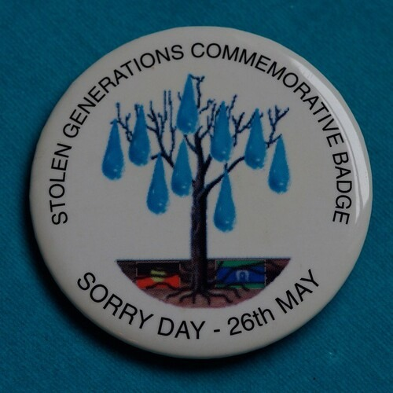
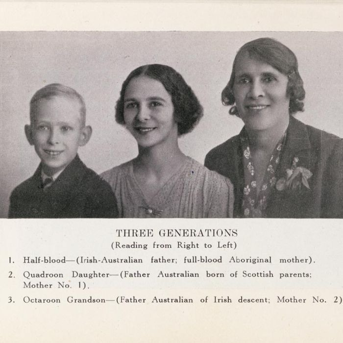

Original Blackboard item · _7400122_1
It is estimated that as many as one in three Indigenous children were forcibly removed from their families between 1910 and the 1970s, profoundly impacting almost all Aboriginal and Torres Strait Islander communities across Australia. Children were forcibly removed from families and communities as a result of race-based policies set up by both State and Federal governments. Aboriginal children who were placed in homes, or adopted or fostered out to non-Indigenous families suffered and still suffer today from grief and trauma as a consequence of losing connections to family, identity, land, language and culture. These children are known as the Stolen Generations (Healing Foundation, 2021).

The Aborigines Act 1905 placed into law the absolute right of the State over Aboriginal Peoples, demonstrating how racist beliefs merged into legislation. Aboriginal Peoples were considered to be less than human and government legislation was used to control and confine them away from white settlers and society. Very few Aboriginal people evaded the ruthless legislation that controlled and governed their lives in all aspects. ‘Half Caste’ (considered a highly disrespectful and insulting term) children were to be taken from their families so they could be ‘civilised’ and have ‘better opportunities in life’ away from their ‘savage’ origins (Dudgeon, Milroy & Walker, 2014).
Indigenous children were forcibly separated from their families and communities since the early days of European occupation of Australia (Human Rights and Equal Opportunity Commission, 1997). The exact numbers of Aboriginal and Torres Strait Islander children removed by authorities between 1788 and 1997 remains unknown. However, it has been extimated that up to 50,000 Indigenous children were taken from their families and placed in government institutions and white foster homes. It is estimated that between 1912 and 1962 two out of three mixed descent Aboriginal children spent some of their childhood separated from their families and communitites as part of the Removal policy, driven by government policies such as Assimilation (Bennett, 2019, pp. 3-30).

READING 2.2
Have things changed?
Is there another Stolen Generation of children occurring now?
Read Myreading 2.2 Family Matters report (2024) pp 14-64 to discover the latest figures of Aboriginal and Torres Strait Islander children being removed into out of home care.
Watch 6 minutes of footage from the Apology to the Stolen Generations in Australia by then PM Kevin Rudd on the 13 February 2008. After viewing this, answer True and False questions below.
[9.78] [Music] [36.16] February the 13th [38.32] 2018 was an incredible moment in [41.24] Australian history a day in which the [44.48] nation stopped joined together to [47.68] acknowledge the sufferings of indigenous [50.44] Australians the day the Prime Minister [53.52] said sorry on behalf of the Australian [57.40] Parliament it was a day we ref [59.96] recognized mistakes of the past and [62.64] resolved that these mistakes would never [66.44] happen [67.68] again thank you very very much the [69.84] bottom of my an apology is not the [72.84] Panacea it's not the One-Stop shop that [75.96] means that everything's going to be fine [78.52] um but what it is is a great Foundation [81.48] or stepping stone into making these [85.44] things um more possible it gives us a [88.84] chance to think about possibilities of [90.80] what we can achieve Beyond this point [93.36] you've come all the way from the Alice [94.92] yeah well thank you for being here good [96.12] to see you got your camera jumper [102.97] [Music] [117.08] on to the stolen Generations I say the [121.92] following as Prime Minister of [124.32] Australia I am [126.20] sorry on behalf of the government of [128.76] Australia I am sorry on behalf of the [132.24] parliament of Australia I am [134.72] sorry and I offer you this apology [138.28] without [141.64] qualification we apologize for the hurt [144.68] the pain and suffering we the parliament [146.96] have caused you by the laws that [149.12] previous Parliament have enacted we [151.80] apologize for the indignity the [153.64] degradation and the humiliation these [155.36] laws embodied we offer this apology to [158.48] the mothers the fathers the brothers the [160.76] sisters the families and the communities [163.08] whose lives were ripped apart by the [165.24] actions of successive governments under [167.52] successive parliaments so let us turn [169.96] this page together indigenous and [173.00] non-indigenous Australians government [175.68] and opposition Commonwealth and state [178.92] and right this new chapter in our nation [182.52] story [184.69] [Music] [186.99] [Applause] [208.76] together [222.92] you could hear a pin drop it was [226.12] electrifying that atmosphere and uh I [229.80] remember a journalist asking me an hour [232.84] later what was it like in there can you [234.36] describe it that was the singular word [236.24] that I could think of there was no other [238.04] way to describe it was electrifying one [239.80] once it all had unfold [242.08] unfolded um and then of course the [246.04] tears and more tears and more tears and [249.52] More Tears the crying has never stopped [252.56] it's like it was just the beginning of a [257.20] huge [259.76] um breath you know an [263.16] exhale of [265.04] relief and emotion that still hasn't [268.72] stopped after all these years forget [273.44] about all the trouble [276.40] times the people like me and there's a [278.68] lot of people out there like me who have [281.32] weren't personally stolen or taken away [283.96] from their families but my ancestors [286.84] were my grandmother was and it's because [289.24] of that that I no longer have my [291.24] language I no longer am familiar with [294.92] some of the basics of our culture those [297.68] stories have stopped so for me [300.24] personally I feel like the apology is [302.84] not just one for my [305.40] family and the families of the past but [309.00] it's also for those of us who mourn the [312.60] things that we've lost that make up a [315.72] part of Who We [318.67] [Music] [328.64] Are
false Finish ? Retry ? Kevin Rudd was the second Prime Minister to apologise for past racist policies of Australian governments aimed at Indigenous Australians. Question 1 true PM Rudd apologised for: ‘the hurt, the pain and the suffering that we the parliament have caused you by the laws that previous parliaments have enacted’. Question 2 The single word that Shelley Reys (Reconcilliation Australia), used to describe the atmosphere on that day was ‘uniting’. Question 3